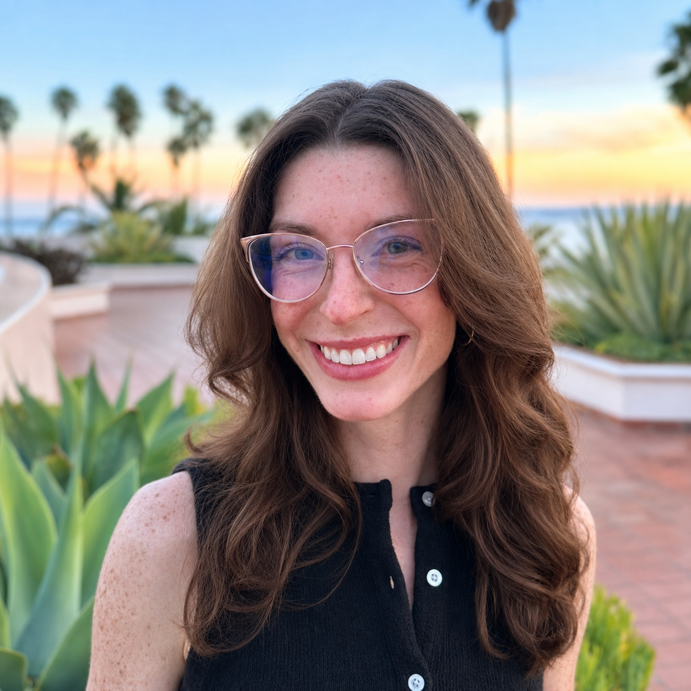

Think. Discuss. Reconsider.
Frequent understanding checks, partner discussions, and data interpretation activities give students opportunities to test their ideas and revise their reasoning as understanding grows.
Neuroscience · Teaching · Inquiry
I’m Riley Kendall, a PhD candidate in Behavioral Neuroscience at UCLA and a part-time lecturer at Chapman University. I study how experience shapes decisions and help students connect neuroscience to their lives.

About me
My work brings together neuroscience, computational analysis, and a commitment to helping students develop as thoughtful, independent learners. At UCLA, I work with Dr. Andrew Wikenheiser to investigate decision making through foraging behavior, computational modeling, and hippocampal electrophysiology.
At Chapman, I design and teach Physiological Psychology and have co-taught Neuroscience II in the doctoral physical therapy program. I enjoy making complex ideas approachable through discussion, hands-on activities, and immersive fictional cases.
My academic background spans biochemistry and molecular biology, computational and data sciences, and psychology. Across these fields, I’m drawn to the same process: asking questions, examining evidence, and revising our understanding.
Teaching & mentorship
I want students to connect course concepts to their personal and professional lives and feel equipped to approach unfamiliar problems. My teaching makes room for questions, practice, and the gradual development of confidence.
Frequent understanding checks, partner discussions, and data interpretation activities give students opportunities to test their ideas and revise their reasoning as understanding grows.
Immersive hospital mysteries and space mission case studies invite students to examine fictional clinical evidence, connect concepts, and explain their conclusions.
I learn about students’ preparation, goals, and circumstances, then provide clear expectations, thoughtful feedback, and opportunities to develop unfamiliar skills.
Confidence develops through active inquiry and practice.
Research
My research examines how experience shapes decisions to leave a current opportunity and what to pursue next when alternatives are uncertain.
I investigate how reward availability, time, effort, and experience influence rats’ choices between foraging opportunities, using behavioral analysis and computational models.
Hippocampal electrophysiology offers a way to examine neural activity as animals navigate and make decisions about where to seek rewards.
I plan to extend these questions to human behavior through computerized tasks, computational modeling, and eye tracking as resources and collaborations allow.
Selected scholarship
Faculty for Undergraduate Neuroscience Workshop · Teaching presentation
Coauthor · Proceedings of the National Academy of Sciences, 122(44), e2520884122 · Read paper
First author · Behavioral Neuroscience, 136(5), 467–478 · Read paper
Coauthor · Experimental Gerontology, 130, 110818 · Read paper
Curriculum vitae
My experience includes university teaching, undergraduate mentorship, electrophysiology, computational modeling, and data analysis in Python, R, and MATLAB.
Contact
I welcome conversations about neuroscience education, undergraduate mentorship, and decision-making research.